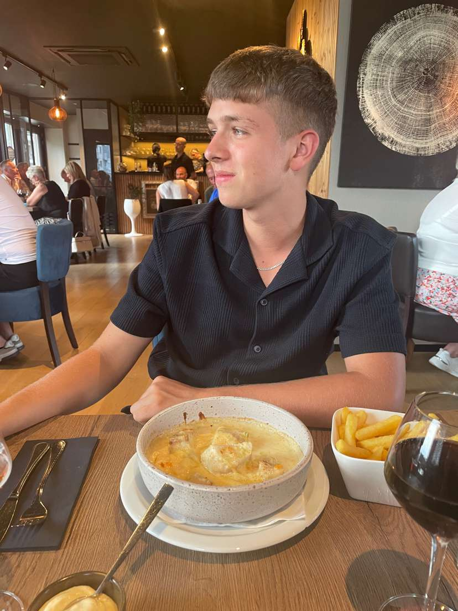

Ik ben 20 jaar oud en dit is mijn kleine plekje op het internet. Kijk gerust rond en leer me een beetje beter kennen.

Hey! Ik ben Joren, 20 jaar oud en woonachtig in België. Ik ben iemand die graag dingen maakt — of dat nu code, designs of gewoon iets creatiefs is. Technologie fascineert me al van jongs af aan, en ik ben dan ook volop bezig mezelf verder te ontwikkelen in de digitale wereld.
Naast mijn studies vind ik het belangrijk om een goede balans te bewaren. Je vindt me dan ook regelmatig op het voetbalveld of gewoon thuis achter mijn scherm met een goed spel of muziek op de achtergrond. Ik geloof erin dat nieuwsgierigheid de beste motor is om bij te leren.
📄 Download mijn CVSnelle feiten
Highlights
Momenteel studerend
Volop bezig met mijn studies terwijl ik elke dag nieuwe dingen ontdek. Altijd klaar om bij te leren.
Creatieve insteek
Ik houd van projecten waarbij ik design en technologie kan combineren tot iets dat er goed uitziet én werkt.
Gevestigd in België
Woon en groei in België, maar nieuwsgierig naar de wereld daarbuiten.
Interesses & hobby's
1ste & 2de middelbaar — Een sterke wetenschappelijke en technologische basis gelegd.
3de & 4de middelbaar — Combinatie van mechanica, elektronica en informatica.
5de & 6de middelbaar — Verdieping in elektronica en informatica, met een focus op ICT-systemen.
1ste jaar hoger onderwijs — Transitie naar professionele bachelor, brede informatica-fundamenten.
2de jaar — Focust op moderne applicatieontwikkeling en artificiële intelligentie.
Huidig🌐 Talen
💻 Hard Skills
🤝 Soft Skills